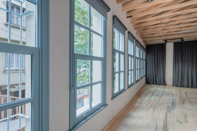
Summer Residency in Istanbul
August 2025With great pleasure, I am participating in an intensive one week collaborative project at Saye Collective in Istanbul in August 2025.

With great pleasure, I am participating in an intensive one week collaborative project at Saye Collective in Istanbul in August 2025.
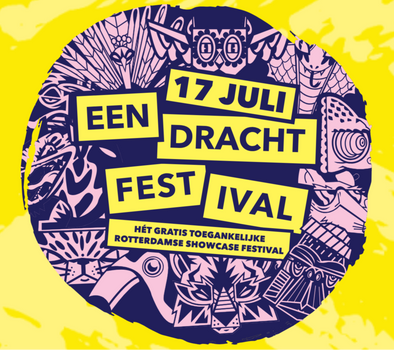
On 17th of July, 2025, I will be showing "Radical Meditation" at Eendracht festival in Rotterdam. Radical Meditation is an immersive performance that emerged from the Experiential Learning program at Timewindow (Marie Louise), and was first shown in November 2024. The work satirically critiques the commodification of mindfulness, delivered by Radical Mindfulness Corporation, it blends corporate structures with spiritual practices, offering participants a transformative experience that challenges traditional notions of personal growth.
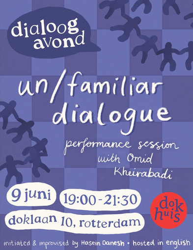
How do we begin a conversation with someone we don't know? Can a brief encounter become a space of real connection? In this participatory performance session, Omid Kheirabadi invites you to explore the quality of dialogue through movement, presence, and collective creation. You won't be watching from the sidelines, as this is a shared experiment in performing together, with all the openness, awkwardness, and unexpected intimacy that can bring.
Through movement, improvisation, and conversation, we'll explore the dynamics of attention, presence, and connection. Omid's practice creates temporary spaces where people come together to move, speak, and improvise. These collective actions serve as a way to investigate how we relate to one another with the hope that something meaningful will arise among strangers.
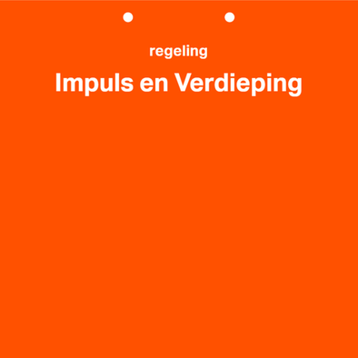
I am grateful to receive the "Impulse en Verdieping" grant from CBK Rotterdam for the upcoming video project "Whose street is this? decolonization of an ordinary neighborhood as common space" taking place from September till November 2025.
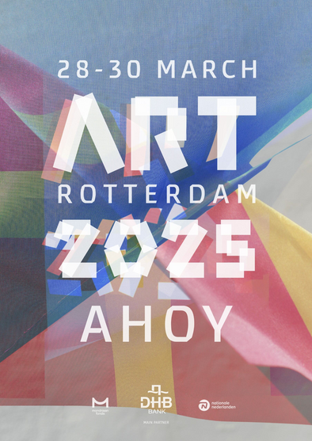
I will be showing "Carnisse in Flux" at ART Rotterdam from 28th to 30th of March. This show is part of Prospects 2025 group exhibition organized by Mondriaan Fonds.
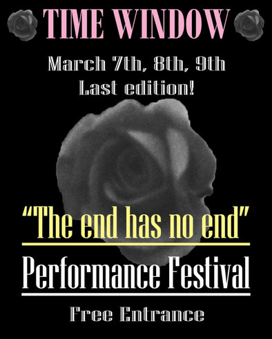
From March 7 – 9, TimeWindow I will be performing at The End Has No End, a ritualistic closing in the shape of a 3-day festival marking the transformation of our community. As we reach the end of our subsidy period, we come together in a powerful moment of collective farewell—grieving what is ending while celebrating all that we have built. Through performances of over 30 artists, as well as shared experiences, and artistic expressions, this festival is an archive of what we cherish. Though this chapter closes, the knowledge, relationships, and creative energy cultivated over the years will continue to shape new futures.
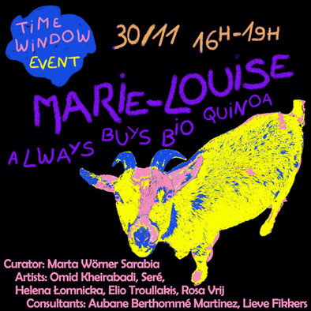
After one week of intense residency, I will be showcasing the result of this period on 30th of November 2024. Curated and organized by Marta Wörner Sarabia, in consultation with Aubane Berthommé Martinez and Lieve Fikkers (WEEF Collective), the theme of this residency is Radical Mindfulness. To explore this topic, I was invited to be part of this group of fascinating artists whose practices reflect and interrogate this concept.
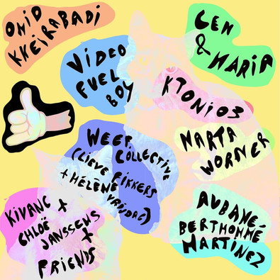
I will be showing some test works for my upcoming exhibition at ART Rotterdam, in my studio space in TimeWindow. Join me and other 12 creatives from our community on the 21st and 22nd of September to experience it all. We are open from 11:00 to 22:15 on Saturday and from 11:00 to 17:00 on Sunday.
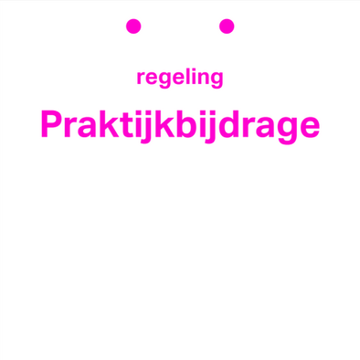
CBK has generously supported my current project "carnisse in Flux" with a one-time contribution of Praktijk Bijdrage. In collaboration with Shardenia Felicia, we are going to explore Rotterdam South, and specially the Carnisse neighborhood and the state of change it is going through due to the ongoing gentrification.
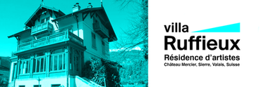
It's an honor to announce that I have been selected for a six-week artist residency at Fondation du Château Mercier in Sierre, Switzerland in February and March 2024.
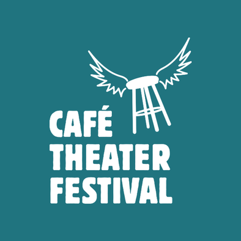
We've been selected to present our new performance at Café Pret in Rotterdam Zuid as part of this year's Café Theater Festival. Taking place on March 22 & 23, the work is a collaboration between Isha van der Burg and Omid Kheirabadi—a layered, humorous exploration of two neighbors making a performance about two neighbors. What starts as playful meta-theatre spirals into a surreal investigation featuring Marx, a possibly fictional thinker named Gürt Woldertz (spelled wrong on purpose), and the unresolved mystery of basement defecation. No reservation needed—just drop by and watch it unfold.
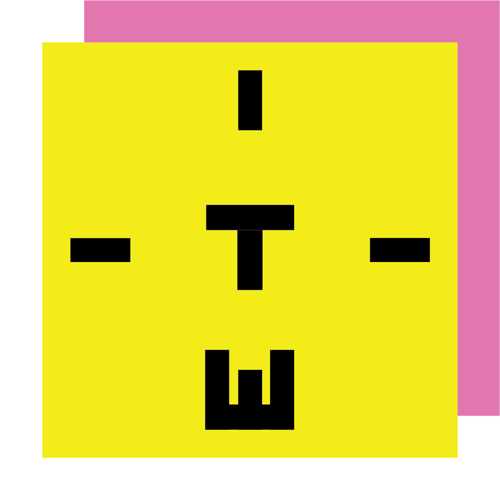
I am honored to announce that as of February 2024, I have become a new member and resident at TimeWindow creative community in Rotterdam.
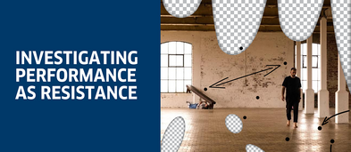
I am glad to announce that my research project "Happening to One Another" has been accepted to be part of the research and artist residency program at Goethe Institute in Rotterdam from the 1st of September until the 20th of December 2023.
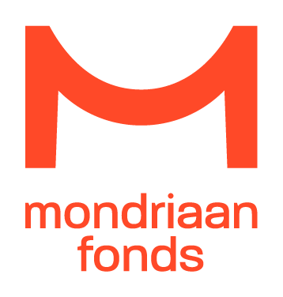
I am honoured to receive a one-year grant from Mondriaan Fonds starting from 2023. I will be showcasing one project from this period in the Prospects exhibition in March 2025.
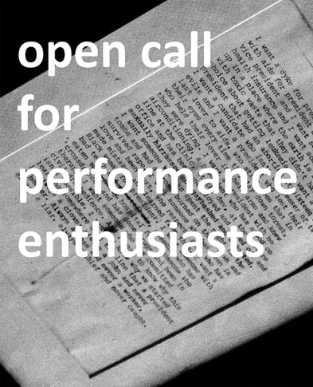
I am looking for a few performance enthusiasts! For my project "Happening to One Another" I need some people who would like to be part of this artistic research and participate in four improvised performance sessions once a week in September 2023.
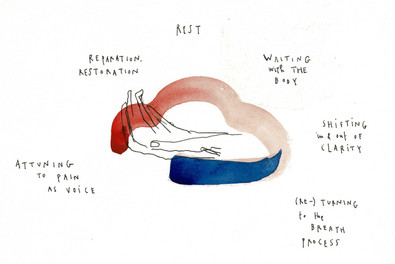
Honored to receive the Research and Deepening Grant from CBK Rotterdam for the research project "Happening to one another: a study of performance art as a form of resistance."
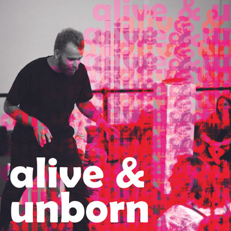
'alive & unborn' is a dark satirical performance reflecting on the injustices created by years of the racist capitalist system, colonialism and slavery, and the demons of credit and debt. What's hope and how much of it is left for us?
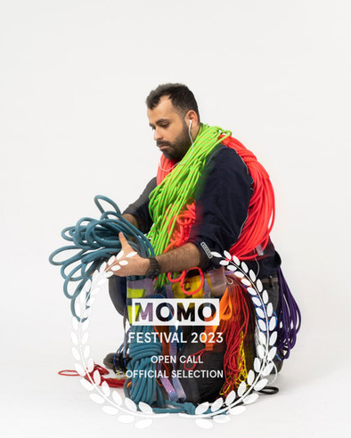
Inburgered (Integrated) is a performance about the struggles of outsiders who try to integrate as "Dutch" citizens. Omid turns his focus toward Dutch society from his perspective of living in the Netherlands as an artist, performer, and researcher based in Rotterdam in this performance.
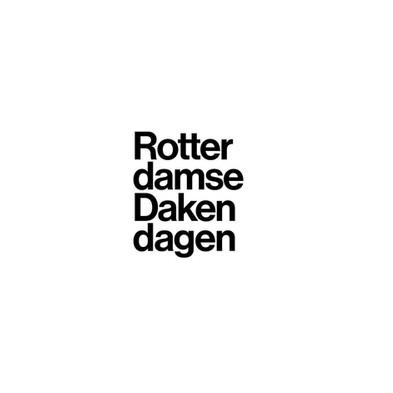
One day performance workshop based on my two-week residency in Belfast, organized in collaboration with Dakendagen in two different locations in Rotterdam.
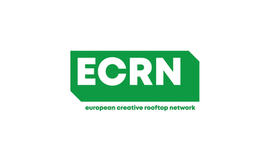
I have been accepted to participate in the European Creative Rooftop Networks for exchange between Rotterdam, Belfast, and Nicosia for a two-week artist residency in Northern Ireland, a month of research, and to organize a creative workshop upon my return.